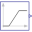
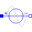

DCSE_SinglePhaseTest example: DC with serial excitation starting with voltage ramp |
|
Diagram

Information
This information is part of the Modelica Standard Library maintained by the Modelica Association.
Test example: Series excited DC machine at single-phase AC voltage started with a series resistorAt sinusoidal source voltage, a series resistor limiting the armature current, is reduced according to a ramp, causing the DC machine to start, and accelerating inertias against load torque quadratic dependent on speed, finally reaching nominal speed.
Simulate for 2 seconds and plot (versus time):
- dcse.ia: armature current
- dcse.wMechanical: motor's speed
- dcse.tauElectrical: motor's torque
Note:
Since both the field and the armature current are sinusoidal, the waveform of the torque is the square of sine. Due to the additional inductive voltage drops, output of the motor is lower, compared to the same motor (DCSE_Start) at DC voltage.
Parameters (7)
| Va |
Value: 100 Type: Voltage (V) Description: Actual armature voltage RMS |
|---|---|
| tStart |
Value: 0.1 Type: Time (s) Description: Start of resistance ramp |
| tRamp |
Value: 0.9 Type: Time (s) Description: Resistance ramp |
| TLoad |
Value: 63.66 Type: Torque (N·m) Description: Nominal load torque |
| wLoad |
Value: 1410 * 2 * Modelica.Constants.pi / 60 Type: AngularVelocity (rad/s) Description: Nominal load speed |
| JLoad |
Value: 0.15 Type: Inertia (kg·m²) Description: Load's moment of inertia |
| dcseData |
Value: Type: DcSeriesExcitedData Description: DC machine data |
Components (8)
| dcse |
Type: DC_SeriesExcited |
|
|---|---|---|
|  | ramp |
Type: Ramp |
|  | constantVoltage |
Type: SineVoltage |
| ground |
Type: Ground |
|
| loadInertia |
Type: Inertia |
|
| quadraticLoadTorque | ||
| variableResistor |
Type: VariableResistor |
|
| dcseData |
Type: DcSeriesExcitedData Description: DC machine data |